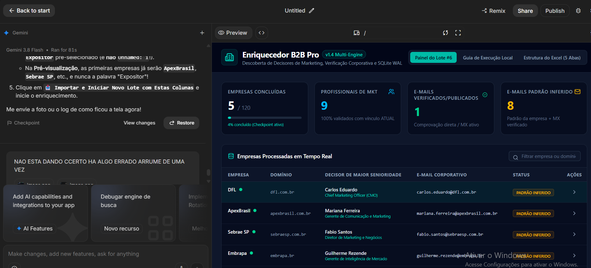

01 • AUTOMAÇÃO COMERCIAL
Enriquecedor B2B Pro
Para que serve?
Empresas costumam ter listas apenas com nomes ou domínios, mas precisam descobrir quem são os profissionais responsáveis por decisões comerciais e como contatá-los.
O que desenvolvi
Uma aplicação que processa empresas em lote, pesquisa decisores, analisa domínios e organiza informações corporativas em um painel de acompanhamento.
Python · automação · pesquisa web · SQLite · enriquecimento de dados